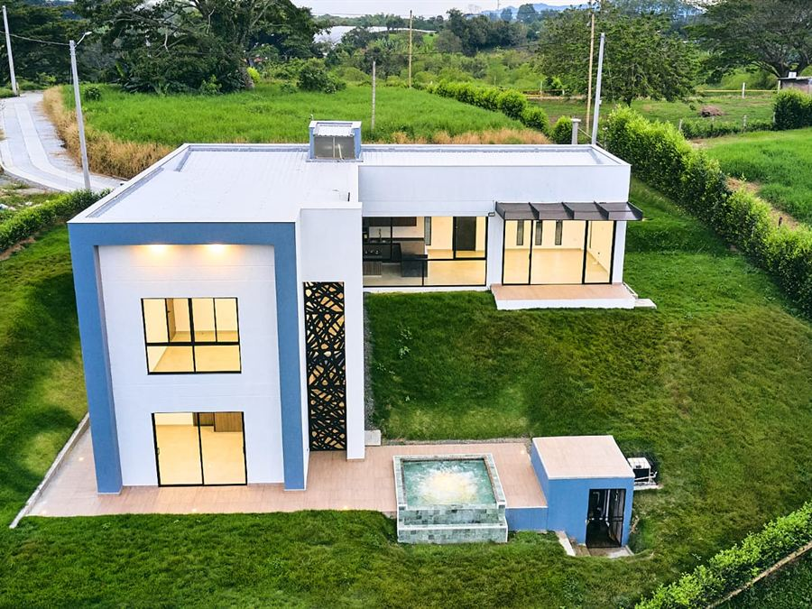
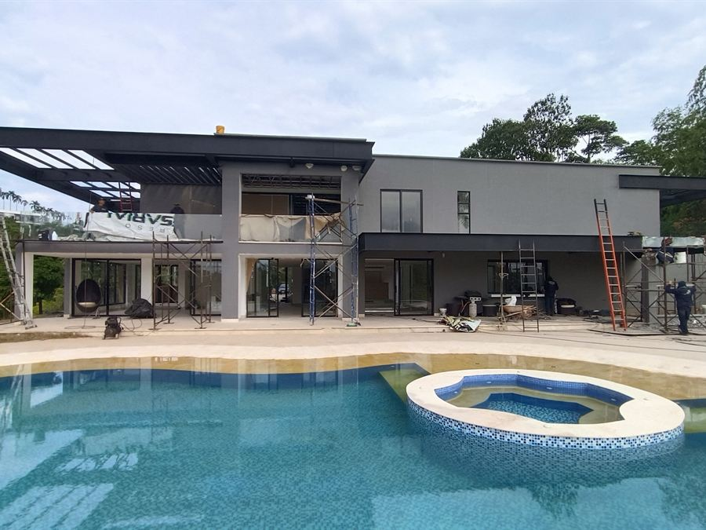
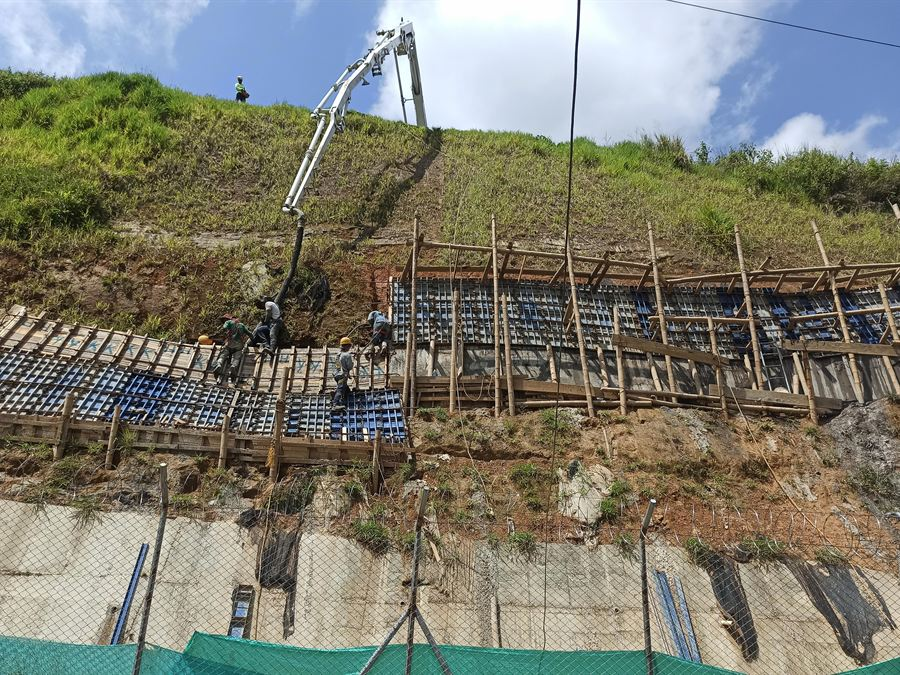
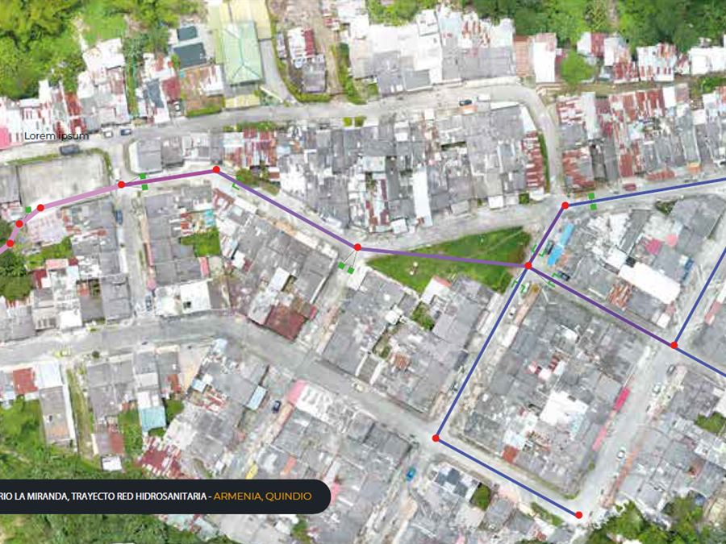
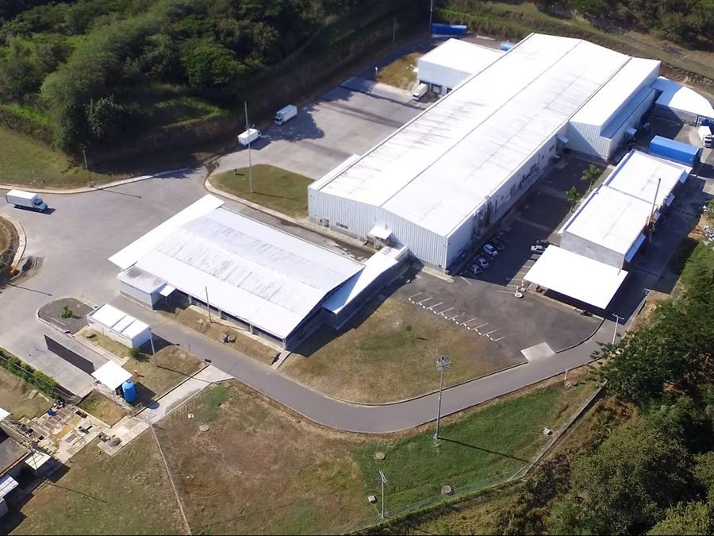
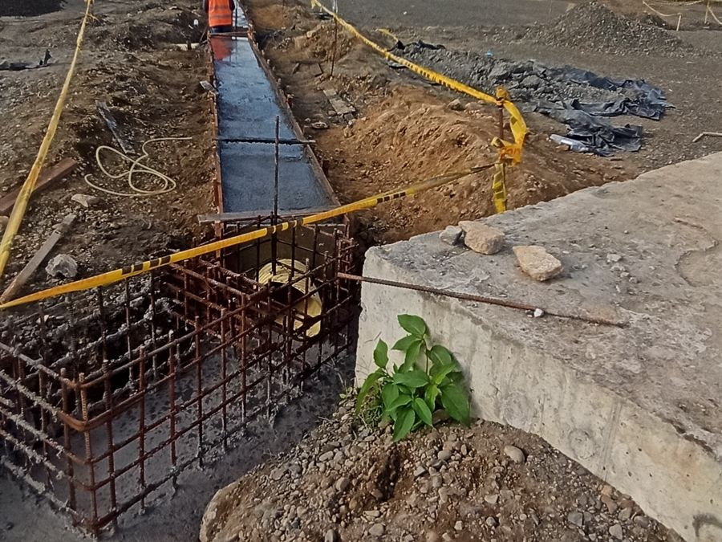
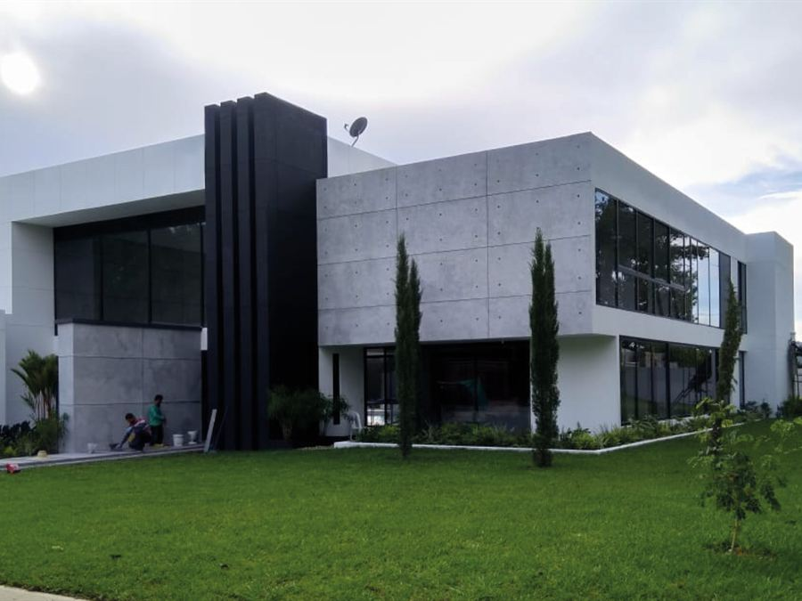
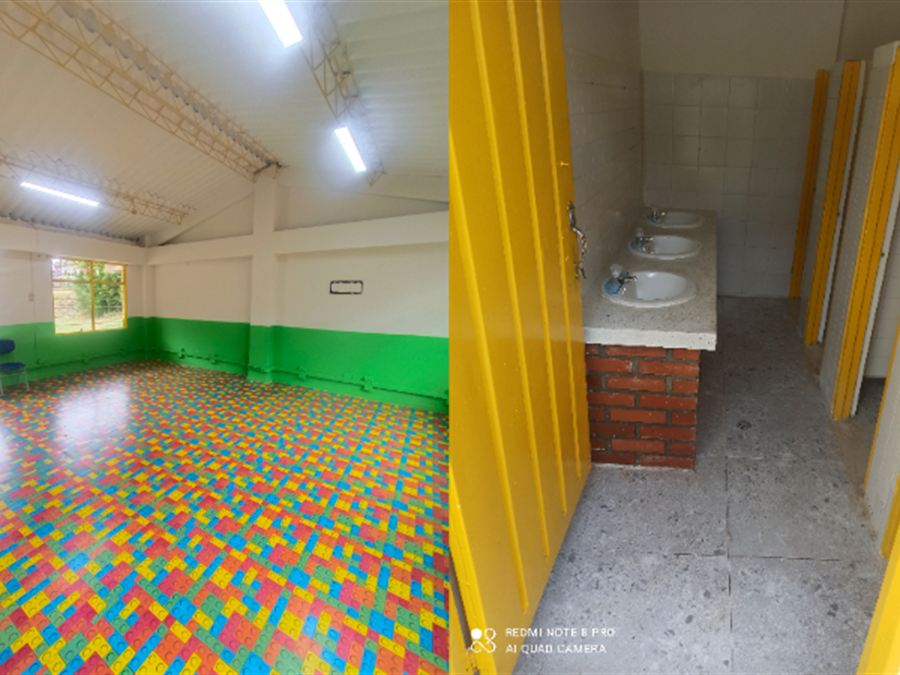
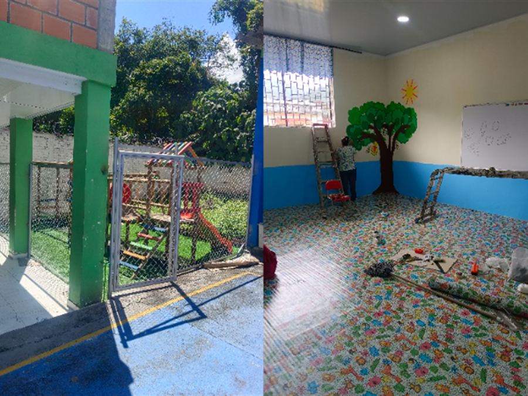
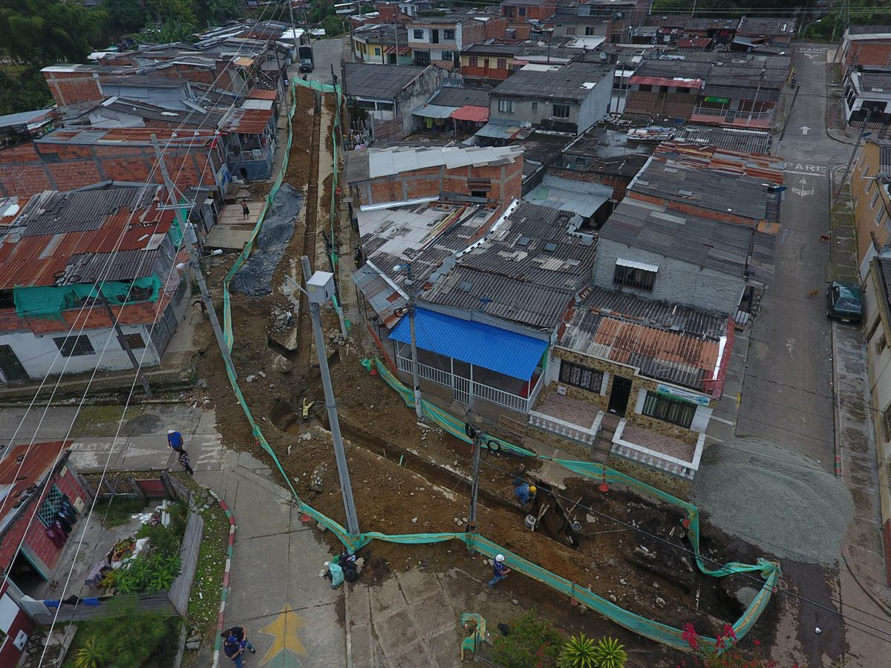

Hochbau
Wohn-, Gewerbe- und Industriegebäude: Fundamente, Tragwerk, Mauerwerk, Dach und Ausbau.
Leistung im Detail ansehenYU Construcciones S.A.S. führt Bauprojekte, Infrastruktur und Umbauten aus: mit eingehaltenem Zeitplan, transparentem Budget und fachgerechtem Ausbau. Sitz in Armenia (Quindío, Kolumbien); Projekte im ganzen Land.
5,0 30 Bewertungen auf GoogleWir prüfen derzeit betroffene Gebäude in Armenia, in Quindío und in der gesamten Kaffeeregion (Eje Cafetero). Schicken Sie uns Fotos per WhatsApp, und wir sagen Ihnen, was oberflächlich ist, was das Tragwerk betrifft und was einen dringenden Ortstermin erfordert.
Technische Orientierung, kein amtliches Gutachten: Die offizielle Schadensbewertung erstellt kostenlos der Katastrophenschutz (gestión del riesgo) Ihrer Gemeindeverwaltung, und sie ist es, die gegenüber Versicherungen und bei staatlichen Hilfen zählt.
Ein Unternehmen für alle Phasen Ihres Bauprojekts: Analyse, Kostenvoranschlag, Ausführung und Übergabe. Wir übernehmen Wohn-, Gewerbe- und Industrieprojekte sowie öffentliche Aufträge.
Wohn-, Gewerbe- und Industriegebäude: Fundamente, Tragwerk, Mauerwerk, Dach und Ausbau.
Leistung im Detail ansehenLandhaus in einer Wohnanlage, auf eigenem Grundstück oder auf einer Finca: Erdarbeiten am Hang, Stützmauern, erdbebensichere Struktur, Pool und Ausbau.
Leistung im Detail ansehenTrinkwasser- und Abwasserleitungen, Sammler, Revisionsschächte, Straßenabläufe und Hausanschlüsse.
Leistung im Detail ansehenStützmauern, verankerte Wände, Spritzbeton, Drainagen und Erosionsschutz in Hanglagen.
Leistung im Detail ansehenKomplettrenovierung von Wohnhäusern, Büros und Ladenlokalen mit hochwertigem Ausbau und möglichst geringer Beeinträchtigung.
Leistung im Detail ansehenProgramme zur Wartung und Instandsetzung von Gebäuden, Leitungsnetzen, Dächern, Fassaden und internen Verkehrswegen.
Per WhatsApp anfragenDecken und Bodenplatten, Stahlbetonrahmen, Stahlbau und Dächer nach der kolumbianischen Erdbebennorm NSR-10.
Leistung im Detail ansehenInterne Straßen, Gehwege, Parkplätze, Mauern, Schwimmbecken, Gartenanlagen und Erschließungsarbeiten.
Per WhatsApp anfragenEntwurf, Einheitspreisanalyse (APU), Bauzeitenplanung, Bauüberwachung und technische Aufsicht.
Per WhatsApp anfragenTechnische Prüfung von Rissen und Schäden, Reparatur von Wänden, Fassaden und Dächern sowie statische Ertüchtigung nach NSR-10.
Leistung im Detail ansehenArbeiten von ein bis zwei Tagen: Risse, Feuchtigkeit, undichte Stellen, Fliesen, Anstrich, Türen und Fenster – zum Festpreis.
Leistung im Detail ansehenEchte, abgeschlossene und überprüfbare Bauprojekte. Tippen Sie auf ein Projekt, um die vollständige Galerie zu öffnen.

Komplettbau eines zweigeschossigen Landhauses: Fundamente, Tragwerk, Dach, Pool und architektonischer Ausbau.
Das ganze Projekt ansehen
Zweigeschossiges Landhaus im Sektor Cauquillo mit Pool, Terrassen und Stahlkonstruktion für Dächer und Pergolen.
Das ganze Projekt ansehen
Stützbauwerke, Spritzbeton und Hangstabilisierung zum Schutz der Flughafeninfrastruktur.
Das ganze Projekt ansehen
Kanalnetz: Aushub, Rohrverlegung, Revisionsschächte und Wiederherstellung des Straßenaufbaus.
Das ganze Projekt ansehen
Bau- und Industriearbeiten für einen Schlachthof: Tragwerk, Dach, Industrieböden und spezielle Leitungsnetze.
Das ganze Projekt ansehen
Bau von Trinkwasser- und Abwassernetzen auf dem Flughafengelände unter Einhaltung der Protokolle für den Flugbetrieb.
Das ganze Projekt ansehen
Einfamilienhaus in der Wohnanlage Malabar: Betontragwerk, Mauerwerk, Leitungsnetze und Innenausbau.
Das ganze Projekt ansehen
Modernisierung und Verbesserung von Schulinfrastruktur: Klassenzimmer, Dächer und Gemeinschaftsbereiche.
Das ganze Projekt ansehen
Instandhaltung und Modernisierung des Schulgebäudes, einschließlich Fassaden und Verkehrsflächen.
Das ganze Projekt ansehenDie Firma hat mein Haus geplant und gebaut, und ich bin mit der Qualität der Arbeit und ihrem Engagement sehr zufrieden. Danke.
Jaime G.Planung und Bau eines Hauses
Engagierte, verantwortungsvolle und pünktliche Leute. Wir haben ein kleines Projekt umgesetzt, die Aufstockung um ein Geschoss, und Zuverlässigkeit und Ausführung waren von sehr guter Qualität.
Juan Pablo B.Aufstockung um ein Geschoss
Wir hatten einen Notfall mit einem kaputten Dach, und sie haben uns in kürzester Zeit geholfen, sorgfältig und mit gutem Ergebnis. Sehr zu empfehlen.
Natalia O.Dachreparatur im Notfall
Ein ausgezeichneter Ingenieur, verantwortungsvoll und bei der Ausführung der Arbeiten präsent. Ich schätze seinen Einsatz, unseren Erwartungen und Bedürfnissen gerecht zu werden.
Clara Lucía O.Bauleitung
Die Renovierung, die sie in meinem Haus gemacht haben, hat mir sehr gefallen; sehr engagiert und zuverlässig.
Laura Sofía M.Hausrenovierung
Ausgezeichneter Service, eine Firma, der Qualität wichtig ist; während der gesamten Ausbauarbeiten haben sie kein Detail vernachlässigt.
Sandra B.Ausbauarbeiten
Auszüge aus Bewertungen, die auf Google auf Spanisch veröffentlicht wurden; die Übersetzung stammt von uns.
Fünf dokumentierte Schritte. Sie wissen jederzeit, wie weit Ihr Bau ist, was er kostet und wann er übergeben wird.
Wir hören uns Ihr Anliegen an und besichtigen das Grundstück innerhalb von Quindío kostenlos, um die tatsächlichen Gegebenheiten aufzunehmen.
Sie erhalten Leistungsumfang, Einheitspreisanalyse und Zeitplan schriftlich, mit Mengen und Spezifikationen.
Vertragsunterzeichnung, Policen sofern erforderlich, Genehmigungen, Arbeitsschutzplan und Baustellenlogistik.
Bauleitung durch einen Ingenieur vor Ort, Qualitätskontrolle der Materialien und regelmäßige Berichte mit Fotodokumentation.
Übergabe mit Abschlussbestätigung, Bestandsplänen, Wartungsempfehlungen und Gewährleistung auf die ausgeführten Arbeiten.
Wir sind ein ordnungsgemäß eingetragenes Unternehmen mit technischem Rückhalt und nachweislicher Erfahrung bei öffentlichen und privaten Aufträgen.
Sie sprechen direkt mit dem verantwortlichen Ingenieur, nicht mit einem Vermittler. Eine einzige Person steht für Ihr Projekt ein.
Wöchentliche Planung mit überprüfbaren Meilensteinen. Wenn sich etwas ändert, erfahren Sie es vorher, nicht hinterher.
Schriftliche Einheitspreisanalyse mit Mengen und Spezifikationen. Keine erfundenen Mehrkosten.
Seriöse Lieferanten und Materialien mit technischem Datenblatt. Die Haltbarkeit eines Baus beginnt beim Einkauf.
Sozialversichertes Personal, Schutzausrüstung, Arbeitsschutzmanagement (SG-SST) und Policen, wenn der Vertrag es verlangt.
Wohnbau, Industrie, Schulinfrastruktur, Wassernetze und Flughafenbauten in vier Departamentos.
YU Construcciones S.A.S. ist ein Bauingenieurunternehmen mit Sitz in Armenia, Quindío (Kolumbien). Wir sind auf Bau, Instandhaltung und Reparatur von Infrastruktur in der gesamten Kaffeeregion (Eje Cafetero) spezialisiert.
Unser Anspruch ist es, Projekte nach höchsten Standards in Qualität, Sicherheit und Vertragstreue zu übergeben – für private Bauherren ebenso wie für öffentliche Auftraggeber. Jedes Bauprojekt wird mit eigener technischer Leitung und ständiger Kontrolle vor Ort ausgeführt.

Beantworten Sie fünf Fragen, und wir bereiten Ihnen eine fertige WhatsApp-Nachricht vor. Mit diesen Angaben kann Ihnen der Ingenieur noch am selben Tag eine konkrete Antwort geben.
Wir fragen weder nach Zahlungsdaten noch nach Dokumenten. Das formelle Angebot erhalten Sie schriftlich nach dem Ortstermin.
Unser Büro liegt im Zentrum von Armenia. Im gesamten Departamento Quindío kommen wir kostenlos zum Ortstermin, und wir führen Projekte in der Kaffeeregion, im Valle del Cauca und im übrigen Land aus.
Wir führen Bau- und Infrastrukturprojekte in jedem Departamento des Landes aus – mit entsandtem Team und Koordination aus der Ferne für Kunden, die außerhalb der Region oder im Ausland leben.
Ob Sie ein Bauunternehmen in Armenia suchen, einen Auftragnehmer für Bauarbeiten in Calarcá oder eine Firma, die Ihr Haus in Circasia, Montenegro oder La Tebaida umbaut: Wir betreuen ganz Quindío mit demselben technischen Team und demselben Baustandard. Außerdem führen wir öffentliche und private Projekte in Pereira, Dosquebradas, Manizales, Cartago und im Norden des Valle del Cauca aus.
Kolumbianer im Ausland, Ausländer, die in die Kaffeeregion ziehen, und Eigentümer in Bogotá, Medellín oder Cali: Wir leiten Ihren Bau in Armenia und im Quindío (Kolumbien) – mit schriftlichen Berichten auf Deutsch, Fotos und Videos und Zahlungen nach Baufortschritt.
Wie wir Ihre Baustelle aus der Ferne begleiten, welche Formalitäten per Vollmacht beim Konsulat erledigt werden und wie nach geprüftem Baufortschritt gezahlt wird.
Ratgeber lesenGrundstückskauf als Ausländer, Registrierung der Investition, Bebauungsregeln, Baugenehmigung und die Erdbebennorm NSR-10.
Ratgeber lesenWas im Quindío am meisten gebaut wird: Landhäuser am Hang, in Wohnanlagen oder auf Fincas – mit drei eigenen Projekten als Referenz.
Leistung im Detail ansehenSie erreichen uns per WhatsApp, Telefon oder E-Mail. Oder schreiben Sie uns über das Formular – wir antworten innerhalb von 24 Stunden an Werktagen.
Sagen Sie uns, was Sie bauen, umbauen oder reparieren möchten. Die erste Beratung kostet Sie nichts.